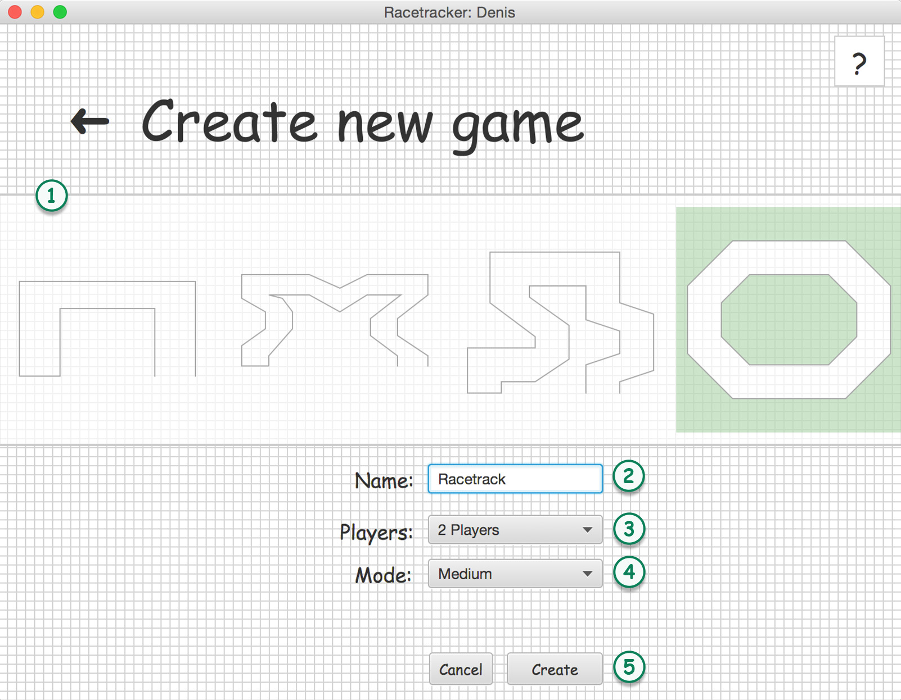

After pressing the create new game button in the list of games, the create new game scene will be presentet. Use this scene to create new games in five easy steps.

Play modes: There are three different play modes you can play. Those modes are set during the creation of the game.
EASY; forces every player to move within 30 seconds.
MEDIUM; forces every player to move within 10 seconds.
HARD; forces every player to move within 5 seconds.